01
更多线路>>
洛杉矶出发
- 黄石公园--玻璃桥-包伟湖-优胜美地十日游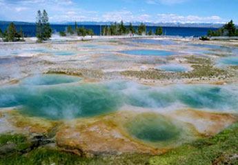
- 出团日期：周三/六(4/28/2012 - 10/3/2012)
- $398.00起
- 推荐理由：从家园直飞出发城市，最随心的行程，没有包团的约束。梦寐的黄石、著名的总统巨石、奇迹般的拱门、刺激的迪士尼、生动的海洋世界、辉煌的好莱坞……景点涵盖全面；共拥洛杉矶国际机场，酒店多种选择，让国内国际客人参团、离团、看景点随心所欲。
- 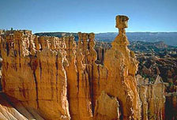
- 黄石公园-包伟湖七日经典游
- 出团日期:周三/六(4/28/2012-10/3/2012)
- 去看看$288.00起

- 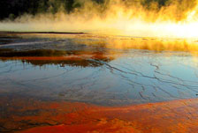
- 黄石公园-北大峡谷五日游
- 出团日期:周六(19/5/2012....6/10/2012)
- 去看看$268.00起

- 黄石公园-拱门-总统巨石七日精华游
- 出团日期:周三/六(4/28/2012-10/3/2012)
- 去看看$288.00起
02
更多线路>>
拉斯维加斯出发
- 黄石公园-总统巨石-旧金山10日游 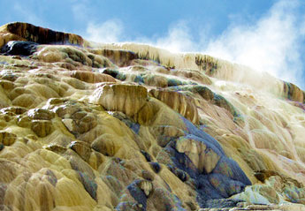
- 出团日期:周三/六出发(4/28/2012 - 10/3/2012)
- $398.00起
- 推荐理由：最畅爽的行程。如果您是美国国内的游客，如果您对自然风景情有独钟，直接飞往拉斯维加斯。羚羊峡谷、北大峡谷、西峡谷、布莱斯勒峡谷、包围湖、黄石公园、总统巨石、拱门公园、大盐湖、红岩公园……美景不断，一定让您目不暇接、叹为观止。
- 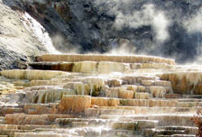
- 黄石公园五日游(拉斯维加斯出发)
- 出团日期:周三/六(4/28/2012-10/3/2012)
- 去看看$268.00起
- 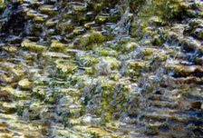
- 黄石拱门总统巨石七日精华游
- 出团日期:周三/六(4/28/2012-10/3/2012)
- 去看看$288.00起
- 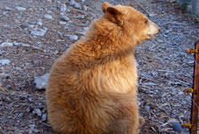
- 黄石拱门总统巨石七日惊喜游
- 出团日期:周三/六(4/21/2012-10/6/2012)
- 去看看$308.00起
- 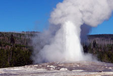
- 黄石公园-羚羊峡谷五日游(入住黄石内)
- 出团日期:周三(5/30/2012-9/26/2012)
- 去看看$298.00起
03
更多线路>>
盐湖城出发
- 黄石公园-西峡谷-拉斯维加斯6日游 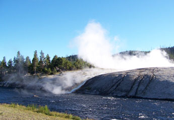
- 出发日期:周日/四(4/29/2012 - 10/4/2012 )
- $278.00起
- 推荐理由：最精致的行程。最短的时间饱览最美丽的景点：黄石公园、总统巨石、国家拱门、宾汉铜矿任意搭配；飞往盐湖城是您最合适的选择。
- 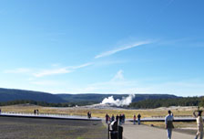
- 黄石公园-大提顿公园四日游
- 每周四、日(4/29/2012 - 10/4/2012)
- 去看看$258.00起
- 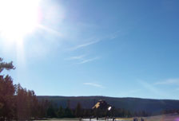
- 黄石拱门总统巨石七日游(入住黄石)
- 每周三出发 (5/30, 6/06, 6/13....9/12)
- 去看看$338.00起

- 黄石公园-大峡谷-盐湖城6日超值游
- 出发日期:每周四(6/08-8/31/2011)
- 去看看$258.00起
- 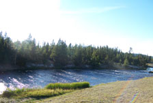
- 盐湖城-黄石公园-旧金山8日游(飞机团)
- 出团日期:周六出发(5/05/-10/06/2012)
- 去看看$638.00起
04
更多线路>>
丹佛出发
- 黄石公园-总统巨石-拱门七日深度游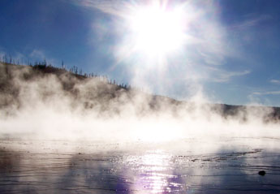
- 出团日期:周三/六(4/21/2012-10/6/2012)
- $308.00起
- 推荐理由：最经典的行程。红岩公园听摇滚、总统巨石留合影、魔鬼峰前做徘徊、黄石园内住木屋、拱门公园近距离……五七天的时间，这些您都能亲身感受到。提前到代加订酒店，丹佛出发是您的不二选择。
- 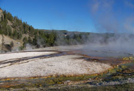
- 黄石总统巨石拱门五日迷你游
- 出团日期:周三/六(4/28/2012-10/3/2012)
- 去看看$258.00起
- 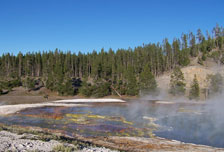
- 黄石总统巨石拱门六日精华游
- 出团日期:周三/六(4/28/2012-10/3/2012)
- 去看看$268.00起
- 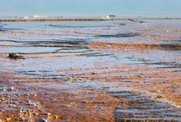
- 黄石公园-西峡谷-拉斯维加斯6日游
- 出团日期:每周日(7/01/2011-9/24/2011)
- 去看看$248.00起
- 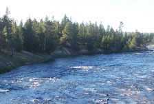
- 黄石公园总统巨石拉斯6日豪华游
- 出团日期:每周日(7/01/2011-9/24/2011)
- 去看看$258.00起
05
更多线路>>
旧金山出发
- 黄石公园-总统巨石-拉斯维加斯十日超值游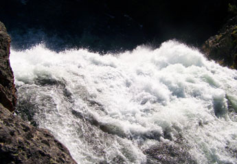
- 出团日期:周三出发(4/25/2012-9/26/2012)
- $418.00起
- 推荐理由：最有深度的行程。权威的斯坦福大学、幽静的优胜美地公园、奢华的拉斯Strip大道、原始的印第安人部落、伟岸的总统巨石雕像、斑斓的黄石公园、多彩的大提顿公园；体味Outlet购物的乐趣、玩转洛杉矶各大乐园。旧金山出发，时间跨度最长、景点最全面的深度之旅。

- 黄石总统巨石玻璃桥十一日超值深度游
- 出团日期:周三(4/25/2012-9/26/2012)
- 去看看$428.00起

- 黄石拉斯主题公园十一日欢乐游
- 出团日期:周六(4/28/2012-9/29/2012)
- 去看看$548.00起
- 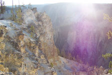
- 黄石优胜美地玻璃桥十日游
- 出团日期:周三(4/25/2012-9/26/2012)
- 去看看$418.00起
- 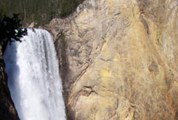
- 黄石优胜美地主题公园十一日深度游
- 出团日期:周六(4/28/2012-9/29/2012)
- 去看看$548.00起
06
活动细则
- 以下优惠只限黄石公园行程(不包括团号为USLS的行程)且在活动时间内付款，不限付款方式。
- 1、满$1000送$30 2、满$2000送$60 3、满$3000-$5000送$100
- 活动时间截至2012.09.19为止
- 以上优惠不能和网站其它优惠共同享用。
- 美国走四方旅游网拥有活动最终解释权。
07
黄石国家公园介绍
黄石国家公园（Yellowstone National Park），简称黄石公园，是世界第一座国家公园，成立于1872年。黄石公园位于美国中西部怀俄明州的西北角，并向西北方向延伸到爱达荷州和蒙大拿州，面积达7988平方公里。这片地区原本是印地安人的圣地，它在1978年被列为世界自然遗产。现是美国旅游的圣地，很受旅游爱好者的喜欢。黄石国家公园自然景点分为五大区，即玛默区、罗斯福区、峡谷区、间歇泉区和湖泊区。
黄石公园旅游看点：
地热奇观：西北的马默斯温泉区以石灰石台阶为主，故也称热台阶区；东北为罗斯福区，仍保留着老西部景观；中间为峡谷区，可观赏黄石大峡谷和瀑布；东南为黄石湖区，主要是湖光山色；西及西南为间歇喷泉区，遍布间歇喷泉、温泉、蒸气、热水潭、泥地和喷气孔。
地热奇观代表性景点：“狮群喷泉”、 “蓝宝石喷泉”、 “老忠实泉”“大��镜温泉”
动物生态： 黄石公园有七种有蹄类动物，如有美洲野牛（bison），驼鹿（moose, elk），叉角羚（pronghorn）等等，有两种熊，黑熊与棕熊、67种哺乳动物、鸟类有300多种，当然，还有大灰狼也是生活在黄石公园非常著名的动物。
附近著名美国旅游城市：洛杉矶、盐湖城、丹佛、拉斯维加斯等多个著名城市靠近美国黄石国家公园，因此前去黄石公园旅游可以同时选择在旅途进行相关城市著名景点的参观，让你的美国之旅更加圆满和充实
黄石公园开放时间： 除11/11(退伍军人日)和11/27(感恩节)外,基本上美国黄石公园全年开放的. 除了北部和东北部出入口，其他入口在每年的11份��冬季清理道路及3月底到4月初��夏季清理道路的时间都将关闭。在冬季公园内部道路只开放给雪地车。
黄石公园最适合旅游的季节：夏季
黄石公园的气候：夏季白天气温达约25摄氏度，在有些低地带会达到30度。平时晚上都很凉爽，但是高地带有时会下降到零度以下，而且，伴随着暴风雨的江风也会常常不期而至。 冬季白天气温达约在零下20到零下5度之间。最低气温记录为零下54度。将雪量很大，平均为150英尺。另外，前去黄石旅游的驴友还需注意白天黑夜的温差变化，做好相关应对准备。
黄石公园旅游注意事项 ：
温泉：不可以在温泉里游泳。来此旅游的游客必须在安全的地方观赏温泉。有的温泉里含有一些物质有可能会划伤皮肤或造成感染，有的温泉水温超过沸腾温度，如果贸然接近会对皮肤造成严重损伤。
野生动物：不可以接近或者喂野生动物食物。不能给野生动物拍照。不要接近野生动物。要按照公园要求与野生动物保持距离。
枯树：黄石公园里有一些枯树，是1988年火灾时遗留下来的。有的树枝会落下砸到游人，所以在路上走的时候一定要小心。如果要在公园里野营或者聚餐，不要选长着很多枯树的地方。